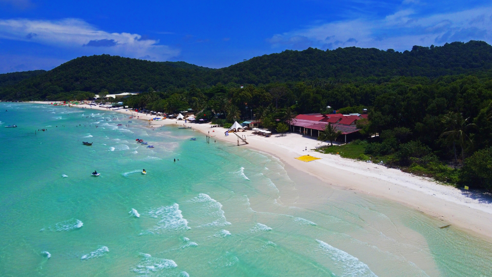

Journeys through VietnamHow many days
How many days
for your next trip?
From two days in Hoi An to four by the sea in Phu Quoc. Read the itinerary, choose a date, and estimate the cost for your group.
Browse all itineraries →
Read the itinerary first
Stops are organized into a day-by-day plan.
Choose your own date
Select a departure date in the booking form.
Plan the group cost
The estimate is based on your party size.
Choose a journey
All tours →Tour bookings are course demonstrations. No payment is collected and no real trip is confirmed.